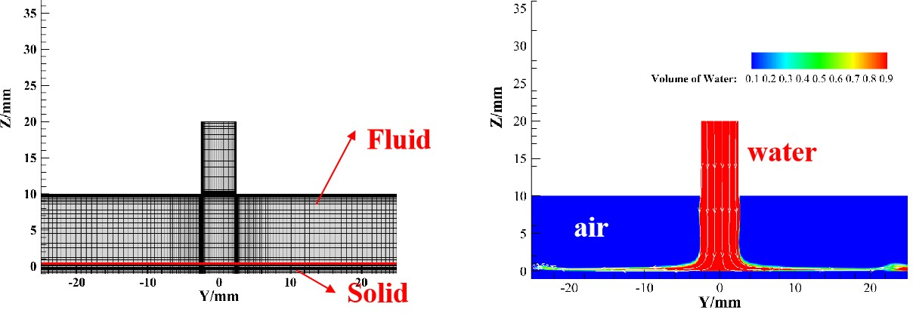
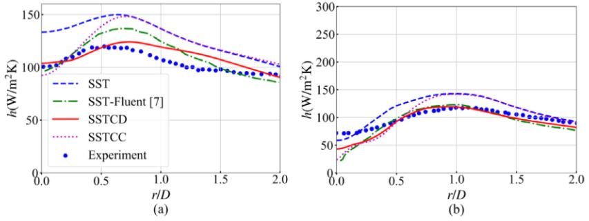

Ph.D. degree from Dalian University of Technnology (DLUT)
B.E. degree from Dalian University of Technnology (DLUT)
Email:
huanghk@sustech.edu.cn
ResearchGate |
GitHub |
ORCID
Research Topics:
Heat transfer |
Turbulence flows |
Jet impingement
Short Bio
I am a postdoc at Suthern University of Science and Technology (SUStech) with Peng Yu. I am working on the turbulent jet impingement flow structure and heat transfer problems at high speed and high temperature. My research interests include heat transfer, computational fluid dynamics, machine learning, and jet flows.
Before joining SUStech, I worked at the Department of Aeronautical and Aviation Engineering of the Hong Kong Polytechnic University (PolyU) for one year as a Postdoc. In PolyU, I engaged the hydrogen-oxygen two-phase flows for the coaxial swirling jet in the group of Prof. Chih-yung Wen, focusing on the problem of the unsteady phenomenon, i.e., the self-pulsation of the system. My B.E. and Ph.D. degrees were obtained from Dalian University of Technology in 2016 and 2022, respectively. I was advised by Prof. Guiyong Zhang.
★ AI-flow
Huakun Huang,
Qingmo Xie,
Tai'an Hu,
Huan Hu,
Peng Yu
★ High speed
Huakun Huang,
Qingmo Xie,
Peng Yu
In progress
★ Acoustic
Yang Zhang,
Guiyong Zhang,
Huakun Huang,
Qihang Xiao,
Tiezhi Sun
★ High speed
Qingmo Xie,
Zihua Liu,
Huo Liang,
Huakun Huang,
Peng Yu
Draft in progress

★ Vapor
Zhaofeng Dong
In progress
Current & upcoming projects
Shenzhen is a young, vigor, and ambitious city in China. Its determination and eagerness to succeed in the field of high technology contribute to many very valuable high-technology companies that are famous around the world. In order to promote Shenzhen's development, we aim to solve the challenging and urgent problems based on our current studies, i.e., clean energy, semiconductor/pharmacy, and aeronautic fields.
★ Aeronatics
Huakun Huang (Projet leader)
★ High Tec.
Peng Yu (Projet leader),
Huakun Huang (Important participants),
and so on.
★ Clean Energy
Peng Yu (Projet leader),
Huakun Huang (Important participants),
Qingmo Xie (Important participants),
and so on.
★ Impingement
Huakun Huang,
Jingxuan He,
Qingmo Xie,
Tiezhi Sun,
Guiyong Zhang,
Peng Yu
Note: The turbulence and laminar contributions to the heat transfer rate and flow fields are analyzed to help improve heat transfer performance of jet impingement.
★ Acoustic
Qihang Xiao,
Guiyong Zhang,
Huakun Huang,
Yang Zhang
Note: A CSRPIM method is proposed for solving the "over-stiff" problem of Finite Element Method (FEM)
★ Impingement
Huakun Huang,
Jingxuan He,
Guiyong Zhang
Note: Based on the SSTCD model, we provide an approach to get accurate flow structures and heat transfer rates effectively. Near the wall, two separated vorticity structures are vividly captured, corresponding to the change of heat transfer peaks.
★ High speed
Kaiwen Wang,
Xiaohui Xiong,
Chihyung Wen,
Guang Chen,
Xifeng Liang,
Huakun Huang,
Jiabin Wang
Note: This study aims for the very high speed of maglev train. The relationship between the weak sock wave and the sonic boom was clarified in terms of the formation and propagation characteristics.
★ Cavitation
Zihao Wang,
Guiyong Zhang,
Huakun Huang,
Hao Xu,
Tizhe Sun
Note: Joint proper orthogonal decomposition strengthens the correlations between multi-variables in the flow field.
★ Algorithm
Zihao Wang,
Guiyong Zhang,
Tizhe Sun,
Huakun Huang
Note: We proved some important insights for different POD medthods, such as POD and shared information multivariate POD.
★ Algorithm
Guiyong Zhang,
Zihao Wang,
Hang Li,
Huakun Huang,
Tizhe Sun
★ Impingement
Guiyong Zhang (supervisor),
Huakun Huang,
Tizhe Sun,
Zhifan Zhang
Note: Focusing on high-speed aircraft or ships, the influence of small-scale rib rough surfaces for jet impingement was analyzed in terms of flow structures, heat transfer enhancement, and pressure drop.
★ Cavitation
Tiezhi Sun,
Qingmo Xie,
Huakun Huang,
Guiyong Zhang
Note: Using the Detached Eddy Simulation (DES), we answer how cavitation affects the hydrodynamic performance of the structure, which can help to design a propeller for ships.
★ Swirling jet
Huakun Huang,
Tiezhi Sun,
Guiyong Zhang,
Moubin Liu,
Zhi Zong
Note: Based on the proposed SSTCD method, the pure effect of swirling flow to jet impingement was studied. And the uniformity of heat transfer related to the swirl number is revealed.

★ Impingement
Huakun Huang,
Tiezhi Sun,
Ning Li,
Guiyong Zhang
Note: The performance of the SSTCD model in predicting the swirling flows is confirmed.
★ Cavitation
Tiezhi Sun,
Yanyi Ding,
Huakun Huang,
Bohan Xie,
Guiyong Zhang
★ Cavitation
Tiezhi Sun,
Songwen Dong,
Yuanqing Liu,
Huakun Huang,
Guiyong Zhang
★ Impingement
Huakun Huang,
Tiezhi Sun,
Guiyong Zhang,
Moubin Liu,
Bo Zhou
★ Impingement
Guiyong Zhang (supervisor),
Huakun Huang,
Tiezhi Sun,
Ning Li,
Bo Zhou,
Zhe Sun
★ Impingement
Huakun Huang,
Tiezhi Sun,
Guiyong Zhang,
Da Li,
Haipeng Wei
★ Impingement
黄华坤(Huakun Huang),
张桂勇(Guiyong Zhang),
孙铁志(Tiezhi Sun),
宗智(Zhi Zong)
★ Impingement
黄华坤(Huakun Huang),
孙铁志(Tiezhi Sun),
尤天庆(Tianqing You),
张桂勇(Guiyong Zhang),
回达(Da Hui),
宗智(Zhi Zong)
★ Impingement
Huakun Huang,
Tiezhi Sun,
Guiyong Zhang,
Lei Sun,
Zhi Zong
Conference & workshops
黄华坤, 张桂勇, 孙铁志, 基于改进 SST k-w 模型的旋转冲击射流研究
清华大学航天航空学院研究生学术论坛, 2020, 线上会议, 中国.
黄华坤, 张桂勇, 宗智, 两种新湍流模型在冲击射流传热问题中的应用
大连理工大学运载工程学部“博睿杯”学术论坛, 2019, 大连, 中国.
黄华坤, 张桂勇, 宗智, 基于一方程转捩模型的狭缝冲击射流传热数值模拟
第二届“高新船舶与深海开发装备” 创新论坛, 2018, 武汉, 中国.
Student Mentoring
Ph.D. Thesis
Qingmo X., Suthern University of Science and Technology, 01/2024 –, studying supersonic jet in terms of flow and acoustic problems.
Yang. Z., Dalian University of Technology, 01/2024 – , studying the flow noise reduction in ocean engineering.
Qihang X., Dalian University of Technology, 01/2021 – 09/2022, developing a method for the flow noise problems based on OpenFoam.
Wanying X., the Hong Kong Polytechnic University, 07/2023 – 01/2024, studying the unsteady characteristics for two-phase flow under supercritical conditions.
Li T., the Hong Kong Polytechnic University, 09/2023 – 01/2024, OpenFOAM.
M.S. Thesis
Yifei Z., Suthern University of Science and Technology, 09/2024 – , studying the two-phase flow under high speed and high temperature conditions.
Yi Z., the Hong Kong Polytechnic University, 09/2023 – 01/2024, studying the unsteady characteristics for two-phase flow under supercritical conditions.
Jingxuan H., Dalian University of Technology, 09/2019 – 06/2022, investigating the flow and heat transfer problems for turbulent jet impingement.
B.E. Thesis
Heming B., Dalian University of Technology, 09/2018 – 06/2019, Excellent Graduation Thesis
Honors and Awards
2023, the Postdoc Matching Fund Scheme at the Hong Kong Polytechnic University
2021, the Excellent paper award for Chinese Journal of Ship Research
2021, the French BV marine engineering society scholarship
2020, the Second prize in the National Ocean Vehicle Design and Production Competition
2019-2020, the Outstanding postgraduate
2017-2018, the National scholarship
2017-2018, the Outstanding postgraduate
2016, the Outstanding of undergraduate
2014-2015, the National Endeavor Fellowship
2014-2015, the Learning excellent award
2014-2015, the Ethic award
2013-2014, the National Endeavor Fellowship
2013-2014, the Learning excellence award
All rights reserved, Huakun Huang, SUStech.
Last updated: November, 2024.

|